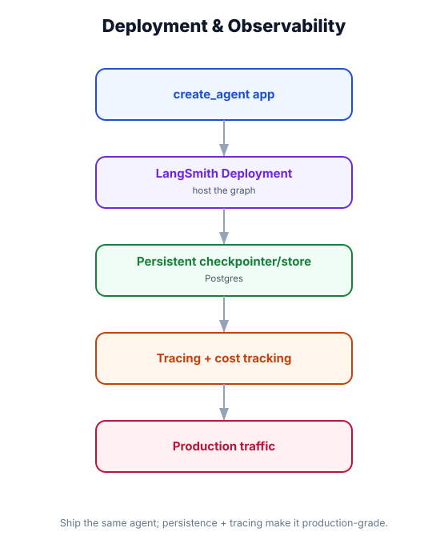

Deploy & Observe — Containerization, Scaling & Monitoring
What you'll learn: How to containerize your agent backend with Docker, configure it for production (no function timeout, proper concurrency), add structured logging + metrics that work with LangSmith, and handle the operational concerns unique to agent workloads: unpredictable latency, cost spikes, and cascading LLM failures.

↗ Open full size · ⬇ Edit in Excalidraw — labels use real LangChain classes.
A patient in a general ward gets vital signs checked every few hours. An ICU patient has continuous monitoring — heart rate, oxygen, blood pressure — with alarms that fire immediately. Production agents need ICU-level monitoring: continuous visibility into latency, token cost, tool failure rates, and guardrail triggers. An alert that fires at 3am beats discovering a $2,000 LLM bill on Friday morning.
Production Dockerfile
FROM python:3.12-slim
WORKDIR /app
# Install dependencies first (layer caching — don't reinstall unless deps change)
COPY requirements.txt .
RUN pip install --no-cache-dir -r requirements.txt
# Copy app code
COPY . .
# Run as non-root user for security
RUN adduser --disabled-password --gecos "" appuser
USER appuser
# Expose port
EXPOSE 8000
# Production server: uvicorn with multiple workers
# --workers 4: handle concurrent requests (agents are async/IO-bound)
# --timeout-keep-alive 120: keep SSE connections alive for 2 minutes
CMD ["uvicorn", "main:app",
"--host", "0.0.0.0",
"--port", "8000",
"--workers", "4",
"--timeout-keep-alive", "120",
"--log-level", "info"]version: "3.9"
services:
backend:
build: ./backend
ports:
- "8000:8000"
env_file: .env
environment:
- LANGCHAIN_TRACING_V2=true
- LANGCHAIN_PROJECT=my-agent-prod
volumes:
- ./backend:/app # hot reload in dev (remove in prod)
depends_on:
- redis
- postgres
redis:
image: redis:7-alpine
ports:
- "6379:6379" # used by rate limiting middleware
postgres:
image: postgres:16
environment:
POSTGRES_DB: agent_checkpoints
POSTGRES_USER: agent
POSTGRES_PASSWORD: ${POSTGRES_PASSWORD}
volumes:
- pgdata:/var/lib/postgresql/data
volumes:
pgdata:Structured Logging for Agents
import structlog
import logging
from contextvars import ContextVar
# Context variable: attach thread_id and user_id to every log line
_request_context: ContextVar[dict] = ContextVar("request_context", default={})
# Configure structured JSON logging
structlog.configure(
processors=[
structlog.contextvars.merge_contextvars,
structlog.processors.TimeStamper(fmt="iso"),
structlog.processors.JSONRenderer(),
]
)
logger = structlog.get_logger()
# In your FastAPI middleware:
async def log_context_middleware(request: Request, call_next):
thread_id = request.headers.get("x-thread-id", "unknown")
user_id = getattr(request.state, "user_id", "anonymous")
# Bind context for this request — shows up in every log line
structlog.contextvars.bind_contextvars(
thread_id=thread_id,
user_id=user_id,
path=request.url.path,
)
try:
response = await call_next(request)
logger.info("request_completed", status=response.status_code)
return response
except Exception as e:
logger.error("request_failed", error=str(e))
raise
finally:
structlog.contextvars.clear_contextvars()
# In your agent / tools:
# logger.info("tool_called", tool="order_lookup", order_id=order_id)
# logger.warning("guardrail_triggered", reason="injection_detected")
# logger.error("llm_timeout", model="claude-opus-4-5", latency_ms=30000)Key Metrics to Monitor
from prometheus_client import Counter, Histogram, Gauge
# Expose these at GET /metrics — Prometheus scrapes every 15s
# Grafana dashboards visualize them
agent_requests_total = Counter(
"agent_requests_total",
"Total agent invocations",
["status"] # "success" | "error" | "timeout"
)
agent_latency_seconds = Histogram(
"agent_latency_seconds",
"Agent end-to-end response latency",
buckets=[1, 3, 5, 10, 20, 30, 60, 120] # agents can be slow!
)
llm_tokens_total = Counter(
"llm_tokens_total",
"LLM tokens consumed",
["model", "direction"] # direction: "input" | "output"
)
tool_calls_total = Counter(
"tool_calls_total",
"Tool invocations",
["tool_name", "status"] # "success" | "error"
)
guardrail_triggers_total = Counter(
"guardrail_triggers_total",
"Guardrail interventions",
["guardrail_type"] # "input" | "output" | "rate_limit"
)
active_streaming_connections = Gauge(
"active_streaming_connections",
"Currently open SSE connections"
)
# Alert rules (set in Prometheus / Grafana):
# - agent_latency_seconds p95 > 30s → page oncall
# - tool_calls_total{status="error"} rate > 10/min → page oncall
# - llm_tokens_total rate sudden 10x spike → billing alertPlatform Comparison
PLATFORM SSE SUPPORT TIMEOUT FREE TIER BEST FOR
──────────────────────────────────────────────────────────────────
Railway ✅ Yes No limit $5/mo credit General agents
Render ✅ Yes No limit 750h/mo free General agents
Fly.io ✅ Yes No limit $5/mo credit Low-latency, global
Google Cloud Run ✅ Yes 60 min Yes Enterprise, GCP stack
AWS ECS Fargate ✅ Yes No limit No Enterprise, AWS stack
Vercel (Edge) ✅ Yes No limit Yes Next.js full-stack
Vercel (Serverless)✅ Yes 30s* Yes ⚠️ Short agents only
* Vercel serverless = 30s max. Fine for fast agents, breaks for document analysis.
Use Edge runtime (no timeout) or a separate long-running backend.
RULE OF THUMB:
- Prototype: Railway or Render (simplest setup, no timeout headaches)
- Production startup: Fly.io (fast cold starts, regional deployments)
- Enterprise: Cloud Run (pay per use, GCP integrations, VPC support)
- Avoid: any serverless with 30s timeout for agents that use heavy toolsAgents with loops or tool retry bugs can burn through thousands of LLM tokens in minutes. Set hard limits in three places: (1) recursion_limit on the agent (max agent iterations), (2) a total token budget middleware that raises after N tokens, and (3) a billing alert in your LLM provider's dashboard. Catching runaway agents at the middleware layer is cheaper than discovering it via your credit card statement.
📊 Production Incident: "Why Is It Slow Today?"
A team gets a Slack alert: agent p95 latency is 45s (normally 8s). They open Grafana: tool_calls_total rate on web_search is up 4x. They open LangSmith: traces show agents calling web_search 12+ times per query. Turns out, a prompt change yesterday made the agent much more aggressive about searching. The LangSmith trace shows the exact model output that triggered the extra searches. They revert the prompt, latency drops immediately. Without structured logging, metrics, and LangSmith traces, they'd be guessing for hours.
Use Docker + uvicorn with multiple workers for the backend; set timeout-keep-alive 120 to keep SSE connections alive. Use structlog for JSON-structured logs with bound context (thread_id, user_id) on every line. Track five key metrics: request count, latency histogram, token consumption, tool call success rate, guardrail triggers. Choose platforms without function timeouts (Railway, Render, Fly, Cloud Run). Set hard recursion and token budget limits to prevent runaway agent cost. LangSmith traces + structured logs + Prometheus metrics = full production observability.